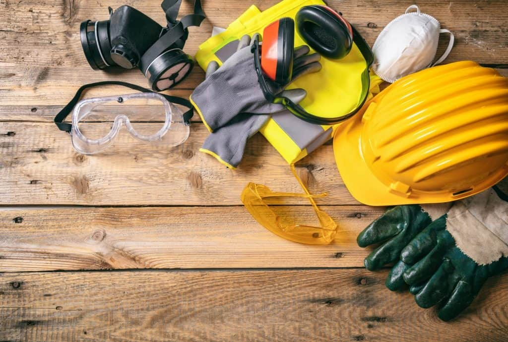

Cliqué sur les points rouges!

Etre engin de chantier, ou même travaillé dans le chantier, ça peut être dangereux, donc je porte toujours mon chillet et casque, ainsi que mes chaussures de sécurité.

Sans communication, on peut pas comprende quesque, les chefs et même mes collégues dise, donc quand que je peux, j'essaie toujours d'aprende des nouveaux mots, ou des phrases que puise m'aider à communiquer avec mes collegues/chefs.Aussi, je pense que sans communication on peut pas vraiment nos respecté.
Etre motivé, est un atout indispensable sur ce métier, et pour être motivé, je doit me conservé et bien répose. Bien sûre, je ferais des heures extras, car j'aime ce métier, et pour aider mes collegues en difficulté.
Avoir une bonne ambience avec ses collegues, je trouve, que c'est une partie vitale dans ce métier que je exerce. Avoir la confience et le sens du respect avec l'équipe, c'est un sentiment vraiment agréable, et que sourtout, me donne la force et le bonheur de me léver chaque matin!